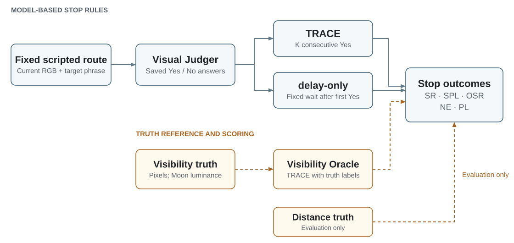

Space VLA Benchmark
Visual grounding and semantic stopping along fixed trajectories in simulated space environments.
GitHub · Project page · 中文 · Protocol · Data · Dataset downloads · Results · Reproduce tables


Mars A · Jezero terrain01 / 03
Target: the blue container
Select a side preview or a scene below to switch. Complete scripted routes replayed from existing baseline dev images. Each source frame is held for 0.6s; no audio. Presentation pacing, not real-time execution or an online model-stop demonstration. Native playback and fullscreen controls are available.
Overview
Space VLA Benchmark examines whether a visual language model recognizes a target, and whether that judgment makes a robot stop at a useful location. It provides fixed scripted T-track trajectories in Mars, Moon and Cabin scenes, paired lighting conditions, and a common evaluation protocol for Qwen2.5-VL-3B, Lance_3B and Nova Lite 1.0.
The local simulator supplies frames and poses. A Judger sees only the current image and target phrase. Saved model answers drive TRACE and delay-only; pixel-based visibility truth drives the Oracle reference. Distance and visibility truth remain evaluation-only. The benchmark evaluates visual grounding and stopping decisions along fixed trajectories in simulation.
| Scale | Value |
|---|---|
| Worlds / scenes | 3 / 9 |
| Unique paired routes | 900 |
| Images per lighting / total | 32,800 / 65,600 |
| Routes per scene | 20 dev + 80 test |
| Routes per world | 60 dev + 240 test |
| Judgers | 3 |
| Test model–route pairs per lighting | 2,160 |
The second lighting uses the same route IDs, targets, camera and split. Its dev images are collected; the comparison uses test routes with parameters frozen on baseline dev.
Experimental design

| World | Baseline → second lighting | Frozen K/q |
|---|---|---|
| Mars | Solar elevation 35° → 8° | 3/3 |
| Moon | A/B: sunlit → sun_east; C: psr → sunlit | 2/3 |
| Cabin | normal → dim; light intensity 60000 → 12000 | 3/3 |
Moon C solar-on is an artificial controlled comparison, not natural illumination of a geographic permanently shadowed region.
The three models contribute equally to dev selection in each world. Selection candidates are K∈{2,3}, q∈{1,2,3}; the full reported grid also includes K=1. Test data do not choose models, prompts or parameters. Query frames depend on each model's actual answer sequence. Detailed protocol.
Dataset downloads
Choose a world and lighting condition. Each group contains 300 routes: 60 dev and 240 test.
Downloads available · dataset-v1.0
| World | Lighting | Routes | Frames | Size | Download |
|---|---|---|---|---|---|
| Mars | Baseline | 300 | 9,879 | 7.85 GB | 5 ZIPs |
| Mars | Second lighting | 300 | 9,879 | 6.36 GB | 4 ZIPs |
| Moon | Baseline | 300 | 10,821 | 6.36 GB | 4 ZIPs |
| Moon | Second lighting | 300 | 10,821 | 7.23 GB | 5 ZIPs |
| Cabin | Baseline | 300 | 12,100 | 11.52 GB | 7 ZIPs |
| Cabin | Second lighting | 300 | 12,100 | 5.93 GB | 4 ZIPs |
900 unique paired routes · 65,600 frames across both lightings. Includes RGB, semantic labels, target masks, route records and evaluation-only truth. Sizes are in decimal GB.
How to download and verify
- Expand a group and download every ZIP part. Download all six groups for the complete dataset.
- Compare each file with the SHA256 checksum list before extracting.
- Extract all parts into the same directory. Each ZIP is independently extractable; do not concatenate them.
Get-FileHash -Algorithm SHA256 -LiteralPath '.\YOUR_DOWNLOADED_FILE.zip'Each extracted group includes verify_dataset_download.py and verification instructions. Evaluation truth must not be supplied to the Judger. Scene source assets and model weights are not included.
Results
Main TRACE at the frozen world-specific K/q, 240 test routes in every cell:
| World | Judger | Baseline SR | Second-light SR | Δ (pp) |
|---|---|---|---|---|
| Mars | Qwen2.5-VL-3B | 89/240 · 37.08% | 79/240 · 32.92% | -4.17 |
| Mars | Lance_3B | 130/240 · 54.17% | 133/240 · 55.42% | +1.25 |
| Mars | Nova Lite 1.0 | 85/240 · 35.42% | 97/240 · 40.42% | +5.00 |
| Moon | Qwen2.5-VL-3B | 67/240 · 27.92% | 53/240 · 22.08% | -5.83 |
| Moon | Lance_3B | 73/240 · 30.42% | 63/240 · 26.25% | -4.17 |
| Moon | Nova Lite 1.0 | 53/240 · 22.08% | 45/240 · 18.75% | -3.33 |
| Cabin | Qwen2.5-VL-3B | 69/240 · 28.75% | 52/240 · 21.67% | -7.08 |
| Cabin | Lance_3B | 68/240 · 28.33% | 37/240 · 15.42% | -12.92 |
| Cabin | Nova Lite 1.0 | 99/240 · 41.25% | 95/240 · 39.58% | -1.67 |

Across 2,160 model–route pairs, TRACE SR changes from 33.94% to 30.28% (−3.66 percentage points). Seven of nine model×world groups decrease, two increase. TRACE is below delay-only in 9/9 baseline and 8/9 second-light groups. The paired differences are descriptive and do not establish statistical significance.
All primary methods · Full nine-grid numerical export · Source hashes
TRACE K/q grids
Nine panels: worlds × Judgers. Rows within each panel are K and columns are q; each cell shows SR (%) on 240 test routes. Orange outlines mark dev-frozen settings, not test-selected optima. Mars second lighting is 8°. Click the image for full resolution.


Compare stop rules: SR / SPL
World-specific dev-frozen K/q; 240 test routes per cell.
| World | Judger | Baseline SR | Second SR | Δ pp | Baseline SPL | Second SPL |
|---|
Quick start: existing results, fully offline
Python 3.12+; the table scripts use only the standard library. No GPU, Isaac, model credentials or package installation is needed to aggregate the included numerical export.
python -B analysis/summarize_results.py
python -B analysis/summarize_results.py --method delay_only
python -B analysis/summarize_results.py --method oracle_visibility
python -B analysis/summarize_results.py --all-gridThis reaggregates saved rollout metrics. It does not regenerate images, model predictions or rollout outcomes. The release contains 120,960 numerical rollout rows (2 lightings × 3 models × 3 worlds × 240 routes × 28 cells). Repeated rows are not independent routes or additional model calls.
To preview the bilingual page with local dataset downloads, run from the repository root:
powershell.exe -NoProfile -ExecutionPolicy Bypass -File .\scripts\preview_site.ps1Then visit http://127.0.0.1:8766/index.html. Keep the preview window open while downloading. The page uses local assets, with no analytics or external CDN. Opening site/dist/index.html directly displays the page, but local dataset downloads require the preview launcher. GitHub Pages setup.
What is included
| Location | Contents |
|---|---|
sfb/ | 18 core modules: actions, poses, TRACE, answer parsing, Judger adapters and visibility utilities |
analysis/ | Standalone aggregation of the supplied results |
results/ | Primary tables, full grid, route splits, dataset metadata and source hashes |
protocols/, configs/ | Public protocol projection, original data-format contract, camera/actions |
tools/verify_dataset.py | Original standalone data integrity checker |
site/dist/ | Bilingual static introduction page, real scene examples and results explorer |
docs/ | Methodology, data specification, reproduction boundary, limitations and attribution |
The full RGB/semantic/mask datasets are distributed as separate download packages, rather than stored in this code repository. Third-party worlds/meshes, model weights and inference services are not included. The HTTP clients require separately configured matching model services. See code scope.
Limitations and transparency
- Qwen online confirmation covers 180 baseline dev routes: action/pose prefixes and same-answer controller replay match on 180/180; stop frames match on 164/180. It does not cover all three models online.
- Cabin baseline versus online recapture has 83/1,086 frame pairs below 40 dB PSNR. Cross-process image repeatability remains a limitation.
- Cabin capture averages 1.273192 s/frame under its documented timing boundary; the HTTP-inclusive online loop averages 1.840710 s. These are different measurements.
- Nova is accessed through a cloud API; its deployed weights and provider-side processing cannot be independently inspected.
- Results cover fixed scripted trajectories in simulation. Autonomous navigation and real-robot performance are outside the evaluated scope.
Full limitations · Licensing and third-party assets
Attribution and citation
Author and affiliation details and software/data licenses are pending confirmation. Third-party materials retain their own attribution and distribution requirements.